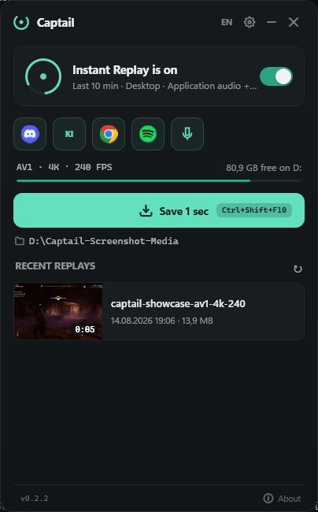
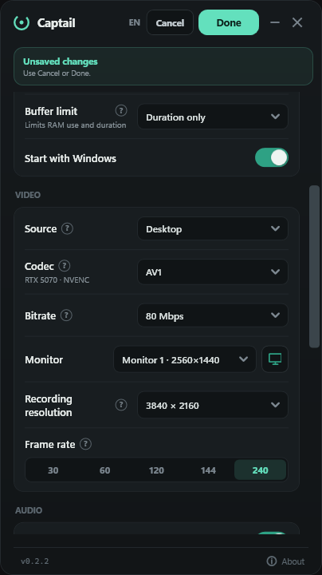
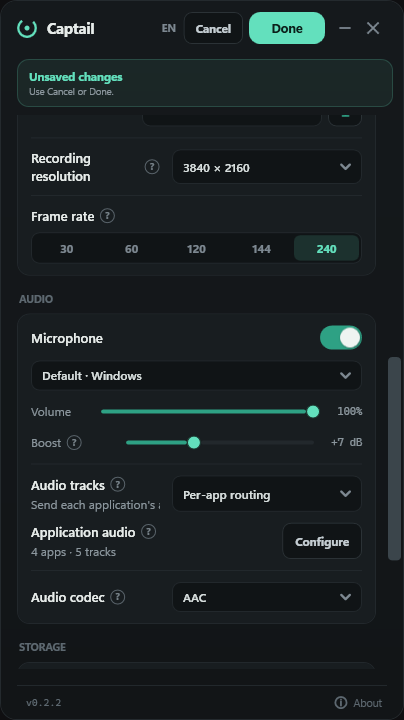
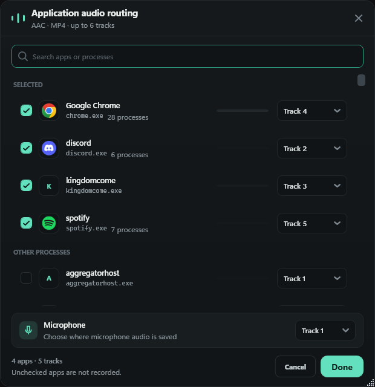
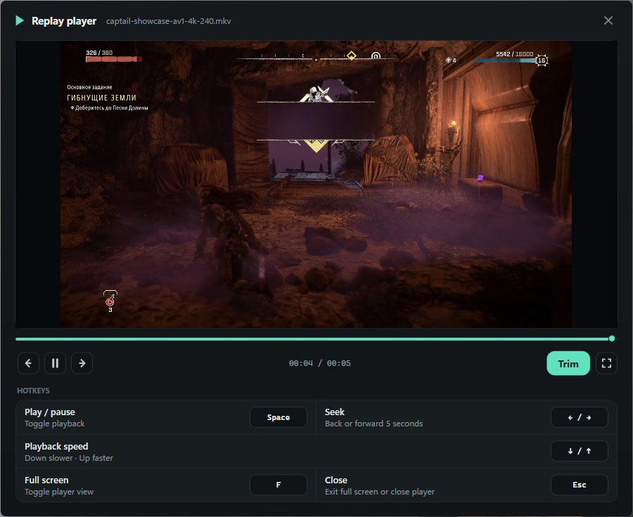
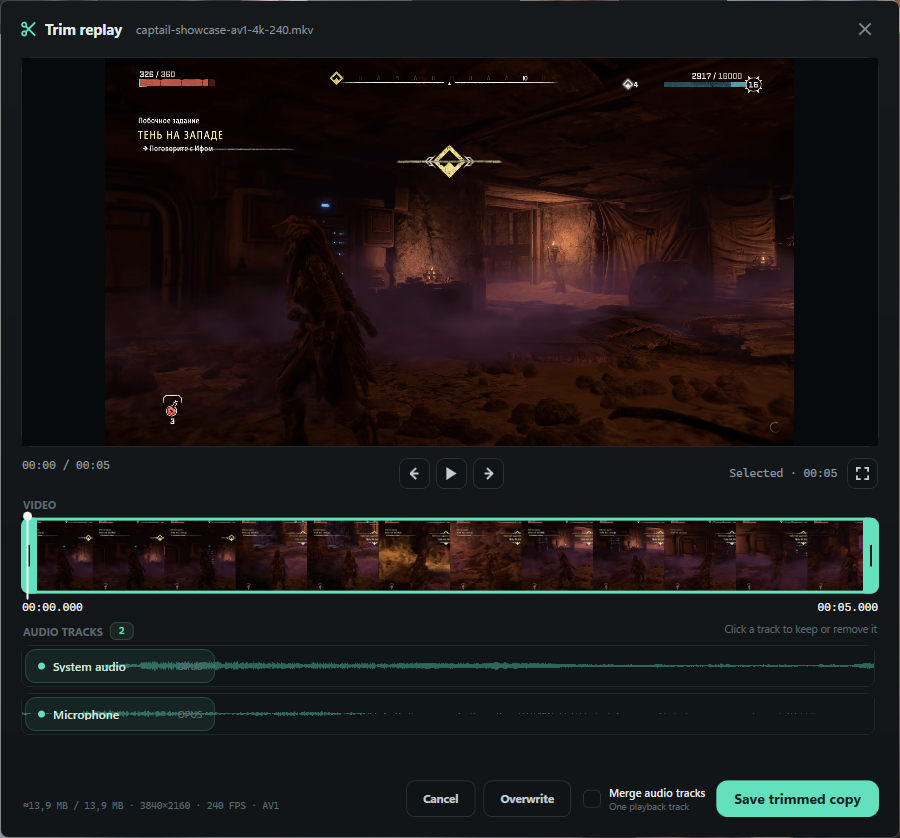

Desktop mode
Records your selected monitor, uses direct Game Capture when usable, and keeps desktop video active when a game cannot be hooked.
Windows replay utility · v0.4.0 preview
Captail keeps recent gameplay ready, watches its capture pipeline, and attempts recovery when recording stops or stalls.
Free · GPL open source · 11 UI languages · Local recordings · No account

A game crashes. A source disappears. A graphics driver restarts. If recording stops quietly, the only warning arrives after you press Save.
Captail is built around supervision: show the real state, attempt a controlled restart, then retry instead of pretending the buffer is healthy.
Recovery reduces lost footage. It cannot recreate frames Windows, a game, anti-cheat software, or a failed driver never delivered.
Rolling capture and recovery are treated as one system.
Compressed video and audio packets stay in RAM until you save.
Watchdog checks for a stopped module or missing new frames.
Captail restarts the pipeline, reports failure, and backs off between retries.
The optional click-through indicator shows when replay is active, recovering, unavailable, or saved.
Records your selected monitor, uses direct Game Capture when usable, and keeps desktop video active when a game cannot be hooked.
Keeps a low-rate detector ready while the buffer sleeps, then wakes for a plausible game. The desktop is never recorded.

Captail detects available hardware encoders and hides unsupported codec choices.
Best compression on supported modern hardware. Newer format; check player and editor support.
Strong compression with broader modern-GPU support than AV1.
Most compatible choice for playback, editing, and sharing.
Encoder families implemented: NVIDIA NVENC · AMD AMF · Intel Quick Sync

Route individual applications and your microphone to the tracks supported by the selected audio format.

Open a replay immediately, seek or change playback speed, then continue into the multi-track editor only when you need it.


No Captail account. No ads. No analytics or telemetry. No automatic upload. Captures, settings, thumbnails, and logs stay on your PC.
Honest network note: GitHub builds may contact the GitHub Releases API to check for updates. An update package downloads only after you click the update control. Store builds use Microsoft Store updates.
Read privacy policyScope comparison, not a performance benchmark.
| Workflow | Captail | ShadowPlay | OBS Replay Buffer |
|---|---|---|---|
| Primary shape | Single-purpose replay utility | NVIDIA capture overlay | Recording and streaming studio |
| Capture setup | Desktop auto-switch or game-only | Instant Replay through NVIDIA overlay | Configure scene, source, output, and save hotkey |
| Recovery promise | Explicit watchdog, visible state, retries | Not evaluated here | Not evaluated here |
| Best fit | Leave replay armed in tray | Use NVIDIA’s integrated capture tools | Build scenes or combine replay with production tools |
| After capture | Replay player and multi-track trim editor | Varies by NVIDIA software version | No focused clip library |
Sources: Captail README · NVIDIA App · OBS overview · Captail is not affiliated with NVIDIA or OBS Project.
Use Microsoft Store for managed updates, Setup for a normal installer, or Portable for a self-contained folder.
Select Desktop or Game Capture, then set duration, codec, FPS, and mixed, separate, or application audio.
Leave Instant Replay enabled. Press Ctrl+Shift+F10 when something happens.
No. Captail uses libobs, but deliberately omits scenes, streaming, transitions, and plugin management. It is focused on Instant Replay.
Use Microsoft Store for Store-managed installation and updates. Use the Setup EXE for a normal per-user installer and uninstaller. Use Portable ZIP for a movable folder; extract the entire archive before launching Captail.exe.
Yes. Per-application audio routing can assign individual running apps and the microphone to available recording tracks. The selected audio codec and container determine how many tracks are available.
English, Russian, Ukrainian, Simplified Chinese, Spanish, Brazilian Portuguese, German, French, Japanese, Korean, and Polish. First launch follows Windows when its language is supported.
No. Captail has no cloud clip service, account, analytics, advertising, telemetry, or automatic upload. Non-Store builds may contact GitHub for update checks.
AMD AMF and Intel Quick Sync capability detection is implemented, but those GPU families still need broader public hardware testing. RTX 40 and RTX 50 series are currently tested.
GitHub release binaries are not Authenticode-signed yet. Verify the package against SHA256SUMS.txt and GitHub build provenance before running it.
No. Captail can detect some stopped or stalled pipeline states and attempt recovery. It cannot recreate frames never delivered by Windows, the game, anti-cheat software, or a failed graphics driver.
Download and run the 0.1.5 Setup EXE manually once. Those two versions contain a Windows file-lock bug in their updater. In-app updates work normally starting with 0.1.5.
Free · Open source · Windows
Install from Microsoft Store or choose the latest Setup and Portable packages from GitHub.